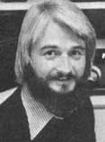
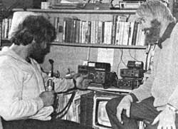

At about 8:45 a.m. on Sunday, May 18th the shock wave from the Mt. St. Helens eruption reached Washington state's San Juan Island. To Allen Negrin, sitting in his cabin atop the island's highest hill, the explosion sounded a bit like the muted rumble of distant thunder.
However, Allen suspected that Mt. St. Helens might be acting up ... so he switched on his wind-powered ham rig. Turning to 3987 kHz-the frequency used by the Mt. St. Helens Emergency Service Net-he discovered that the mountain had indeed blown its top. The news had just been announced-from a perch on the volcano's side-by observer-communicator Gerry Martin (W6TQF).
(Tragically, no more has been heard from Gerry. As I write this column several days after the event, he is still missing and presumed dead.)
Also at 8:45 a.m., some 45 miles to the north of Allen's cabin, Beth and Bruce Proctor and I were boarding the first of two ferries that would carry us to San Juan Island. During an on-the-air conversation a couple of weeks earlier, Allen (WA7CGD) had invited us to pitch our tent for a night or two on his 40 acres and observe the area's hawks and eagles.
We arrived about 2 p.m. and spent much of the afternoon in a reflective mood, watching the continued course of the incredible natural event on Allen's 12-volt TV set, and listening to reports over the emergency net. Of course, the eruption was the main topic of conversation during that evening's West Coast New Directions Roundtable, too. It served to remind us all that the unthinkable really does happen at times.
A WEST COAST REPORT
My visit with Allen is just one example of the many fascinating meetings I've had with West Coast NDR folks during the past few weeks. I hadn't traveled through the west in six years . . . since New Directions Radio was brand new. Back in MOTHER NO. 27 I wrote of the exciting sense of promise I felt during that last visit. I'm glad to say that this year's trip left me with a feeling of promise realized, and of possibility turned into actuality. On the West Coast, alternative ham radio has clearly passed out of its childhood struggles and come of age!
During the past several years I've been hearing reports about the New Directions Roundtable West group, and about their on-the-air meetings which are held every Tuesday, Friday, and Sunday evening, at 8:00 p.m. Pacific time, on 3898 kHz. But since the folks "gather" on a frequency with only regional coverage, I've not been able to participate in the nets from my home in P.E.I. ... and I've regretted not being able to take part in these "get-togethers". The on-air sessions have been well attended, and have dealt with a wide variety of interesting topics.
Even more important, however-at least in my opinion-is the solidly connected extended family that has arisen over the course of six years of radio conversations. And family is really the only term that fits the caring, interacting bunch of NDR hams living up and down the West Coast. They visit one another. They help one another find jobs, information, and scarce materials. They swap (and occasionally lend) equipment, and-when there are big jobs to tackle, or when psychological support is needed-the western hams invariably come through for one another! The people just plain give . .. in a multitude of ways.
It's not surprising, then, that I consider myself lucky to have been able to hang out with these folks for a while. I took a bus from Vancouver, B.C. south to Everett, Portland, Yreka, and Berkeley . . . meeting Randy Brink, Thatcher Robinson, Bob Hickerson, Bo Bogardus, and many other NDR hams that I had talked with over the years and had written to, but had never met in person. These were splendid visits. Each person instantly made me feel like a member of the whole West Coast NDR's extended family . . . and that felt good!
LOOKING TO THE FUTURE
System theorists say that building a new society or culture is a two-stage process: Stage one involves communication among individual people, while stage two involves forming a matrix of active relationships among such individuals.
Building a new culture is-I think most MOTHER-type folks would agree-a worthwhile goal, and it seems to me that the NDR West is demonstrating one effective way to go about accomplishing that aim. A geographically compact NDR network makes it easy to move from stage one to stage two, from talk to interaction. Long distance radio links are valuable, too, of course ... but the West Coast organization, in particular, has demonstrated to me that-in a group with local and regional focus-the communicating and the doing can reinforce and enhance each other!
Peace,
Cop Macdonald (VE1BFL)
P.O. Box 2941
Charlottetown
Prince Edward Island
Canada C1A 8C5
New Directions Radio is an international network of radio amateurs concerned with those ways of using ham radio (and related modes of communicating) that promote our own growth as individuals, and which we perceive as helping to create a more aware, more caring, and more responsible human society. We encourage all who share these interests to work with us. A current schedule of on-the-air activities is included in each issue of the bi-monthly New Directions Roundtable Newsletter, published by Art Mourad (W82POB) as a service to the rest of us. To subscribe, send 25 cents for each issue desired to Art Mourad, P.O. Box 787, Bergenfield, New Jersey 07621.
|
 Copthorne Macdonald is the inventor of slow-scan television . . . a method of amateur radio transmission that allows ham operators to both hear and see each other during shortwave broadcasts. |
 Allen Negrin and MOTHER's own Copthorne Macdonald... the day Mt. St. Helens blew. |
|